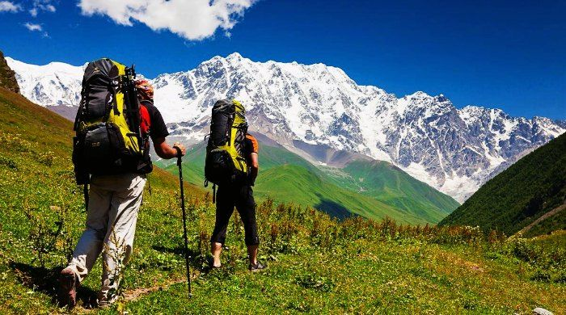

Places to visit
Goa – The Official Party Hub
Unarguably, Goa has to be the amongst the first few places to visit in India in your twenties. Young and energetic! Amazing nightlife, a variety of booze, beach shacks and dirt cheap prices – Goa is one of the best holiday destinations in
India that makes your trip memorable.
Best time to visit: November to February
Attractions: Beaches like Vagator, Calangute, Anjuna, Colva, & Benaulim, Fort Aguada, Church of Mae De Deus, Basilica of Bom Jesus, Temple of Bodgeshwar, Dudhsagar Waterfalls, St Xavier’s Church, Grand Island (for watersports), and
clubs like Cafe Mambos,Titos, LPK (Love Passion Karma), SinQ, & Club Cubana
Mcleodganj – Heaven Amidst The Hills

The majestic mountains can call tourists to experience the best of what nature has to offer at Mcleodganj – one of the most beautiful places in India. Triund offers a spectacular view of the Dhauladhar ranges. Experience bliss while camping
under billions of stars with your friends in Triund. This is among loveliest Indian destinations for camping, regardless of which season you’re coming in. No wonder it’s among the top 10 places to visit in India.
Best time to visit: September to June
Attractions: Kangra Fort, Bhagsunath Temple, Bhagsu Falls, Namgyal Monastery, Dalai Lama Temple complex, HPCA Stadium, tea plantations of Kangra valley, and Triund trek
Srinagar – The Gem of Kashmir
If you’re in your twenties, it’s time to add Kashmir to your list of best places to visit in India. If there is heaven on earth, this it is! Experience its charismatic charm before the natural hits and turmoil spoils it all. And when would be
a better time to explore flood-hit, terror-stricken heaven on earth if not now?!
Best time to visit: April to October
Attractions: Dal Lake (boating in shikaras & nightstays in houseboats), Nishat Bagh, Shalimar Bagh, Tomb of Zin-ul-Abidin, Jama Masjid, Hazratbal Mosque, and Shankaracharya Hill
Andaman – The Beach Haven

Scared of water? Never swam? Maybe it’s time to beat the fear out of you and dive into the deep sea and overcome the fear of water and depths, ZNMD Style. Trust us, you’d be delighted at the sites underwater and it will keep you coming back
for more. For aqua lovers, these famous tourist places in India which feel no less than a paradise!
Best time to visit: November to mid-May
Attractions: Cellular Jail National Memorial, Radhanagar Beach, Rajiv Gandhi Water Sports Complex in Port Blair, Mahatma Gandhi Marine National Park, Chidiya Tapu, and watersports like scuba-diving, snorkeling, & parasailing
Leh-Ladakh – The Biker’s Paradise

Undoubtedly, Leh – Ladakh is on every travel enthusiasts list of places to visit in India before they turn 30. Ride on the crazy winding roads, get stuck in the middle of nowhere, sleep with the locals and learn to be independent on the
desert mountains as you undertake this adventurous journey in one of the best places in India.
Best time to visit: April to mid-May and mid-September to mid-October
Attractions: Zanskar Valley, Pangong Tso Lake, Khardung-La Pass, Spituk Gompa, and Hemis National Park
Binsar – Explore The Realms Of Wildlife

Peace. Jungles. Heights. Chills. Wildlife. All you wildlife enthusiasts out there head to Binsar – one of the rising tourist destinations in India located in the heart of Kumaoni region of Almora for an incredible trip of your lifetime.
Best time to visit:October to November
Attractions:Zero Point, Pariyadeva Pashan, Mary Budden Estate, Binsar Wildlife Sanctuary, Bineshwar Mahadev Temple, and more.